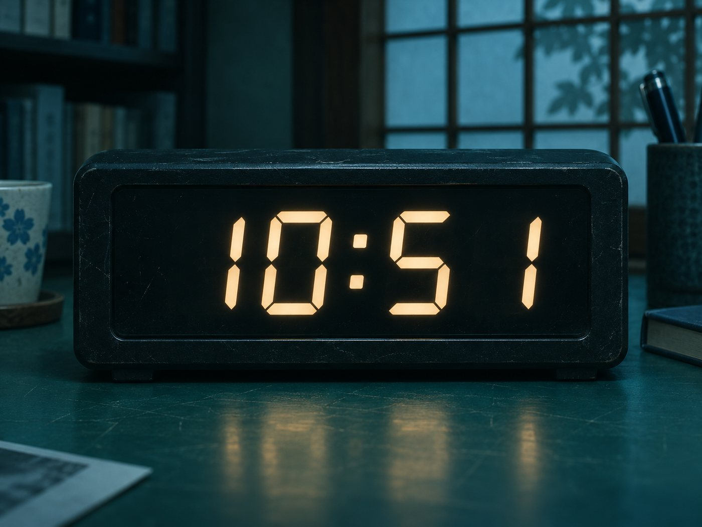
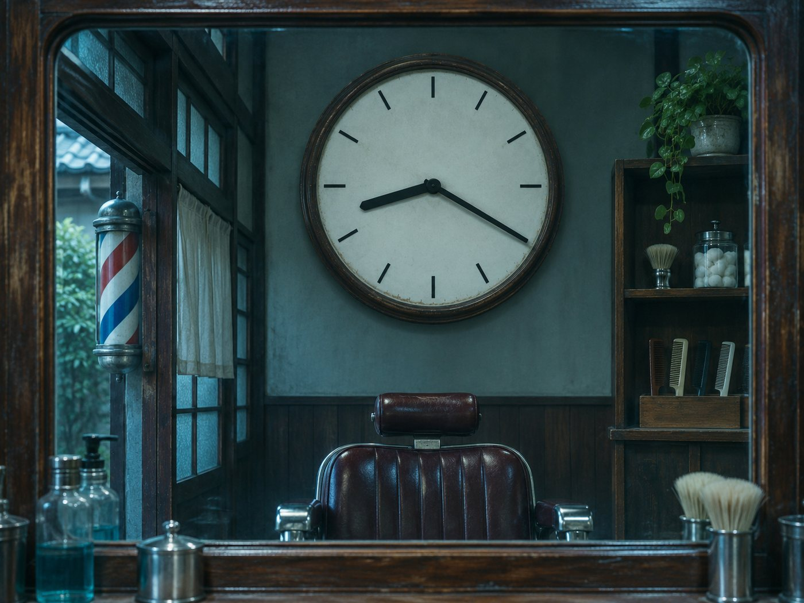

赤い糸の先 ／ 第五話
二度目の訂正
係長は椅子に座り、しばらく何も言わなかった。水城が二枚を指さそうとすると、先に画面の端へ手を伸ばした。
「この箱、まだ落ちてないな」
「こっちでもです」
「終結の受領欄を空けておく。写真の出所を聞こう」
返事が来たのは翌朝だった。広報が渡したのは、最終報告の写真そのものではなく、報告書の作成時に参照された資料の一覧だった。どれも過去の発表に使われたものだ。写真に撮影者の名前があるかと問うと、返信には「確認中」とだけあった。
水城は一覧の上から開き、宝石店の記録で手を止めた。防犯カメラの時計が七分進んでいた件だ。画面の表示は二時十七分。訂正票には二時十分とある。配布版では二時三分になっていた。

「二時三分って、別のカメラですか」
瀬尾は資料番号を見た。「同じカメラ。七分をもう一回引くと、その時刻になる」
一件なら転記の間違いで済む。だが一覧には、時計の読みを直した事件がほかにもあった。水城が逆さに写ったデジタル時計の記録を呼び出すと、瀬尾は端末を半回転させて十五時一分を読み、もう半回転させた。十時五十一分。配布版は、初めの向きに戻っていた。

床屋の時計では、十二時から引き直すと配布版の時刻に戻った。重なった針の事件では、補正した時間がもう一度足されていた。四件の発表資料を通して同じ位置に、〔公開用に編集済み〕の印がある。
「直したあとの数字を、直す前の数字として受け取ったのか」
係長が言った。水城は印の押された頁だけを揃え、元の訂正票は机の反対側に置いた。どこから受け取った資料かが分からなくなれば、次に整理する者も同じことをする。

一覧の末尾に、扉や窓の閉まった五つの現場があった。そのうち一件の訂正票には、発表に使った写真とは別の番号が振られている。番号の横は空欄だったが、裏返すと、古い受領印の下に小さな字が残っていた。
「地下。保管棚の番号もあります」
係長は手を出しかけて引っ込めた。「その票ごと持っていこう。向こうで番号だけ写すと、たぶんまた探すことになる」